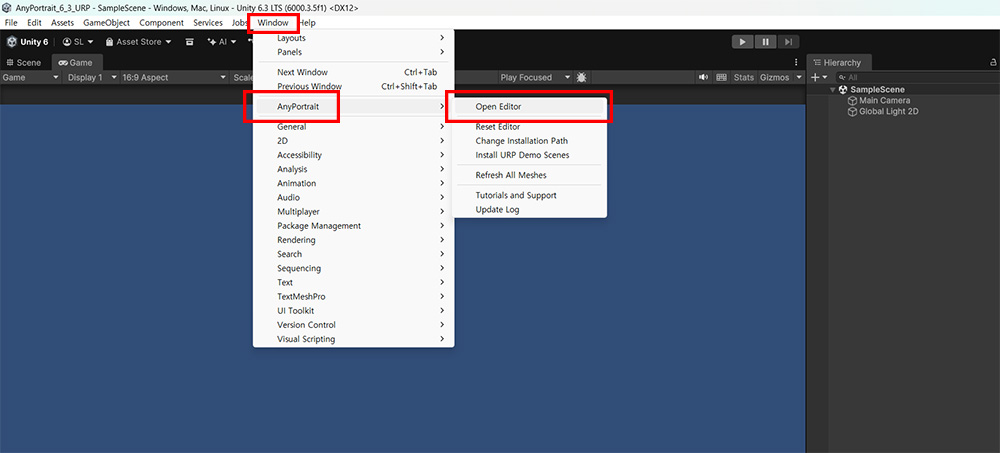
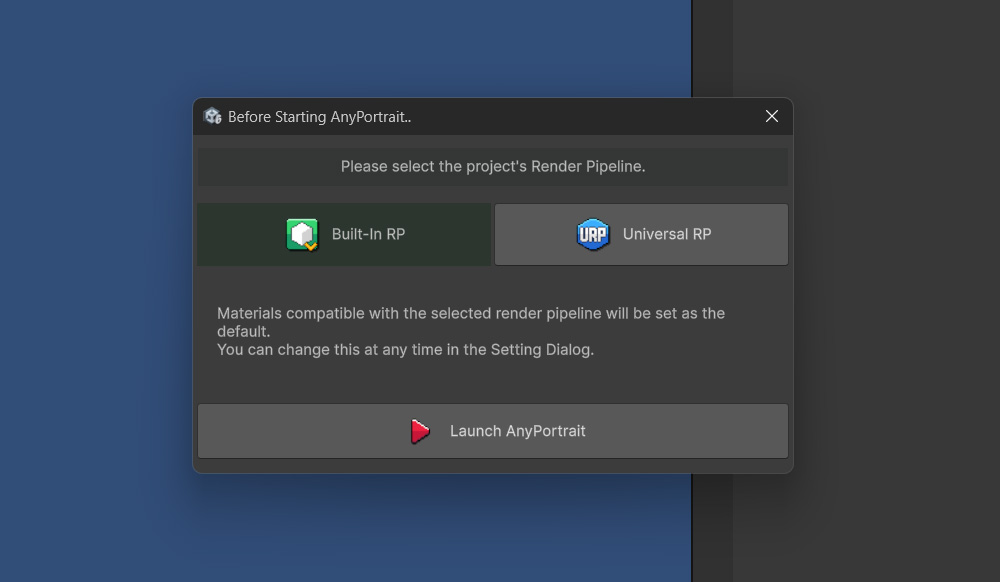
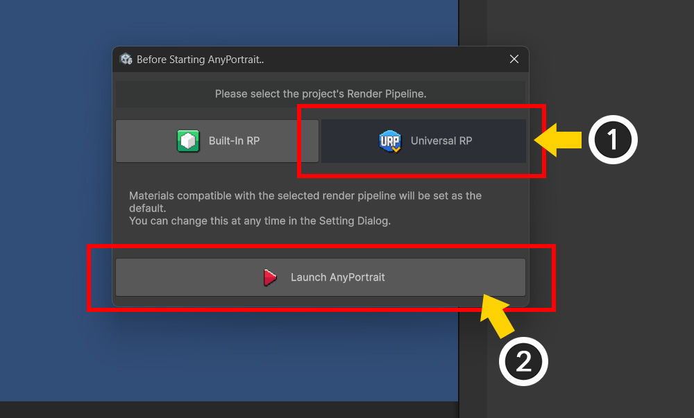
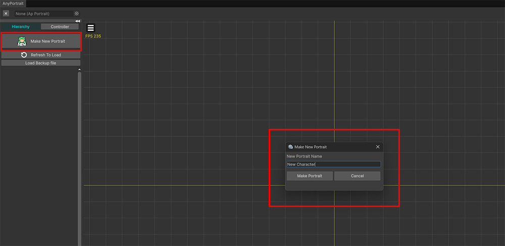
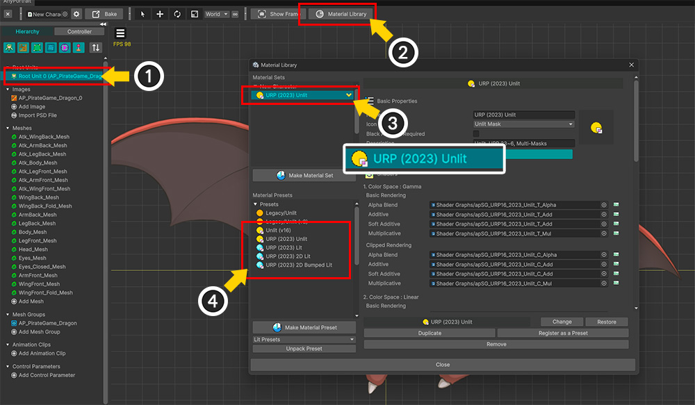
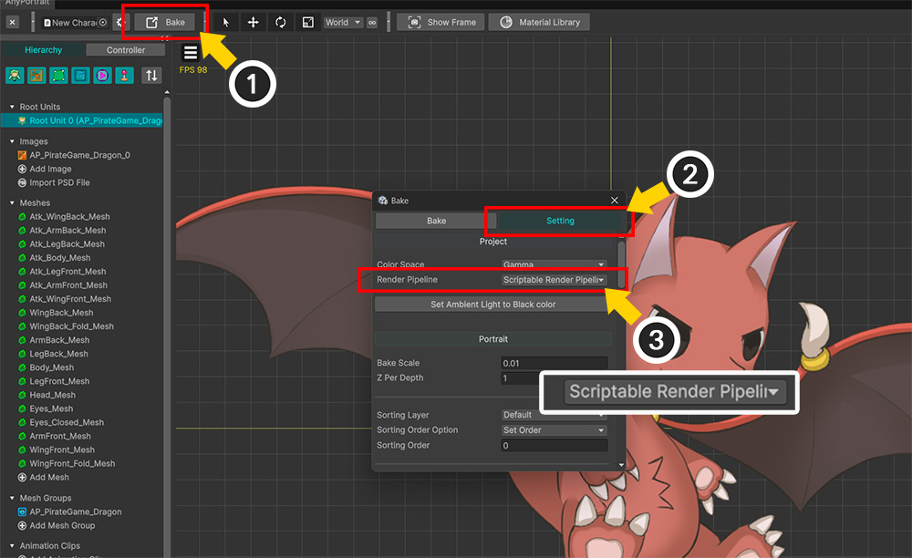
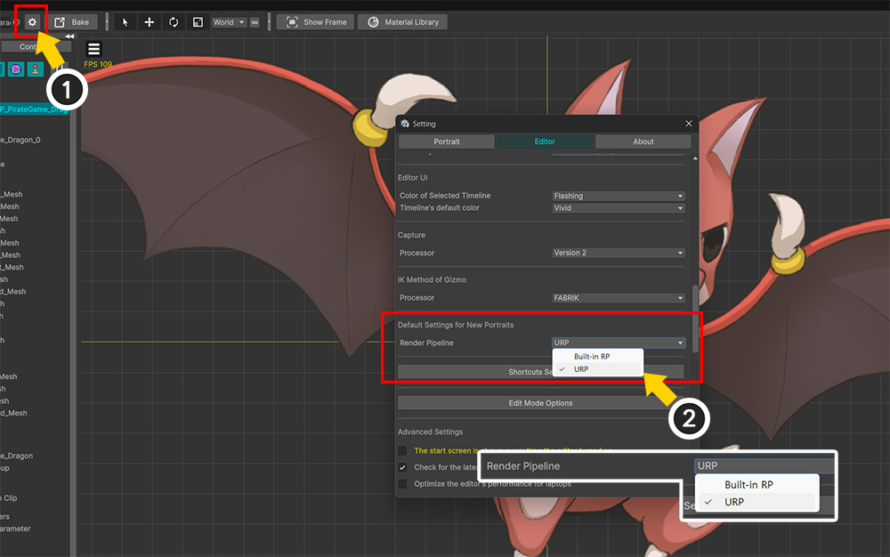

AnyPortrait > マニュアル > デフォルトのレンダーパイプライン設定
AnyPortraitで作成した成果物には、プロジェクトの「レンダーパイプライン（Render Pipeline）」に適したマテリアルとシェーダーを適用する必要があります。
そのため、AnyPortraitエディターの「マテリアルライブラリ」（リンク）を使用して、マテリアルとシェーダーを適切に変更しなければなりません。
AnyPortraitのデフォルトのマテリアルは「Built-In RP」であるため、「Universal RP（以下URP）」に設定されたプロジェクトでは、すべての成果物のマテリアルをURP用に変更する必要があります。
最新バージョンのUnityでは「URP」が推奨されていますが、その場合、毎回「URP」用のマテリアルに差し替える作業はかなり煩雑なものとなるでしょう。
この不便さを解消するため、「AnyPortrait v1.7.0」には、新しいポートレートを作成する際のデフォルトマテリアルをレンダリングパイプラインに合わせて変更する機能とオプションが追加されました。

Unityプロジェクトを新規作成し、AnyPortraitをプロジェクトにインポートした後、AnyPortraitを実行してみましょう。

AnyPortraitエディターが開く前に、現在のプロジェクトのレンダーパイプラインを選択するダイアログが表示されます。
このオプションによって、AnyPortraitにおける「デフォルトのレンダーパイプライン」が決定されます。

現在のプロジェクトのレンダーパイプラインが「URP」であると仮定して、設定を行ってみましょう。
(1) 「Universal RP」ボタンを押します。
(2) 「Launch AnyPortrait」ボタンを押します。

AnyPortraitエディターが開いたら、新しいポートレートを作成してみましょう。

キャラクターの制作作業をすべて完了し、「Bake」を行う前に、「URP」用のマテリアルが適用されているか確認してみましょう。
(1) 「Root Unit」を選択します。
(2) 「Material Library」ボタンを押します。
(3) 「URP」用の「Unlit」マテリアルセットが設定されていることが確認できます。
(4) また、「URP」用のマテリアルプリセットが追加されていることも確認できます。

レンダーパイプラインに応じてマテリアルだけでなく「Bake」設定も変更する必要がありますが、この値も初期設定に合わせて変更されます。
(1) 「Bake」ボタンを押します。
(2) 「Setting」タブを選択します。
(3) 「Render Pipeline」オプションの値が、「URP」に合わせて「Scriptable Render Pipeline」に変更されていることが確認できます。
このページでは「URP」が設定されたプロジェクトについて説明しましたが、「Built-In RP」が適用されたプロジェクトでも、同様の手順でオプションを設定すれば問題ありません。

AnyPortraitの初期画面以外にも、「設定ダイアログ」から「デフォルトのレンダーパイプライン」を変更できます。
(1) 「設定ダイアログ」を開きます。
(2) 「Editor」タブを開き、「Default Settings for New Portraits」セクションにある「Render Pipeline」オプションを変更することで、「デフォルトのレンダーパイプライン」を変更できます。
メモ
「デフォルトのレンダーパイプライン」設定には、以下の特徴があります。
- このオプションは新規のポートレートにのみ適用され、既存の作業物には適用されません。
- このオプションは、Unity 2023以降のバージョンでのみ利用可能です。
- このオプションは、Unityプロジェクト単位で設定されます。